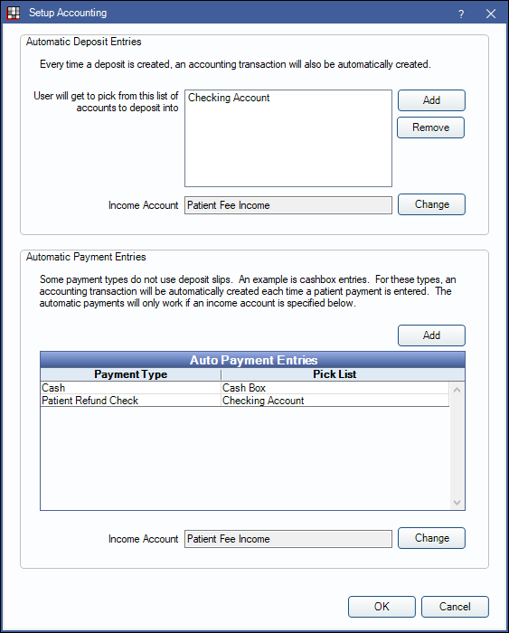
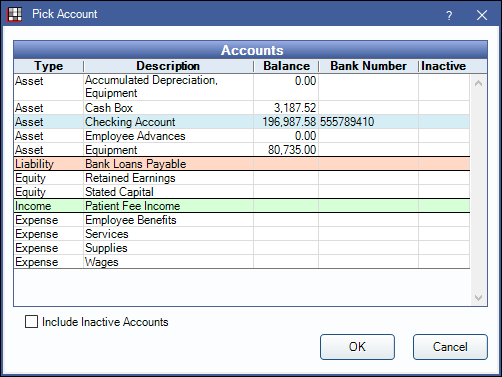

Accounting Setup
Set up accounts for automatic deposit and payment entries when using Open Dental's built-in Accounting tool.
In Accounting, click Setup, Open Dental.
Automatic Deposit Entries
When a Deposit Slip is created, an entry goes into an Asset account (e.g., checking account) to balance a bank account. A second entry is made in an Income account to keep track of the income total.
Automatic Deposit Entries: Set up accounts where Deposits can be automatically deposited into.
Click Add, then double-click an Asset account to add a new account to the list. Accounts already added to the Chart of Accounts in Accounting are available to choose from.
Added accounts will be options in the Deposit into Account dropdown on the Edit Deposit Slip window.
Select an account and click Remove to delete it from the list and make it unavailable when creating deposits.
Income Account: The Income account where deposits will be credited to track total income. Click Change to select a different account. The Pick Account window (shown above) will open.
Automatic Payment Entries
Some payment types that do not use deposit slips (e.g., cash payments or patient refunds) but still need an accounting entry, can be assigned to an Asset and Income account to create automatic payment entries. Every time the payment type is used, an entry goes into an Asset account (e.g., checking account) to balance the bank account. A second entry is made into an Income account to keep track of the income total.
Automated Payment Entries: Associate a payment type to an Asset account. Click Add to open the Edit Auto Pay Entry window and select a payment type from the dropdown menu.

Click Add, then double-click an Asset account from the Pick Account window.
Added accounts will be options in the Pay Into Account dropdown on the Payment window.

Income Account: The Income account where the payment types will be credited to track total income. Click Change to select a different account. The Pick Account window (shown above) will open.
If accounts for automatic payments are set up incorrectly, transactions may be attached to invalid accounts and users may receive an error when trying to view old payments. Follow the Accounting troubleshooting steps to identify and fix the transactions.